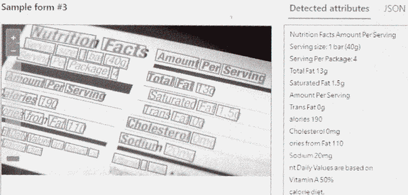
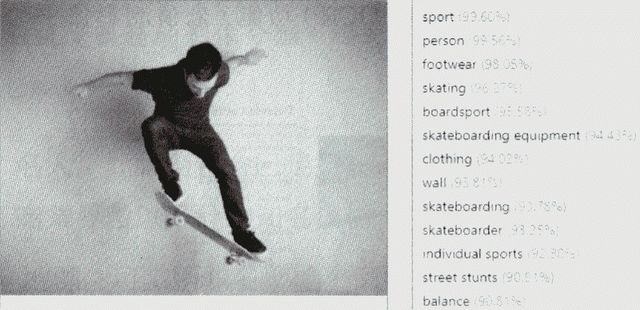
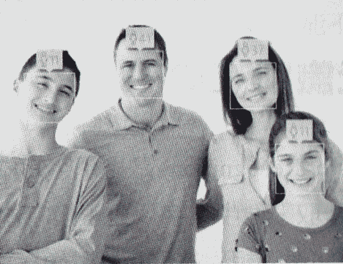
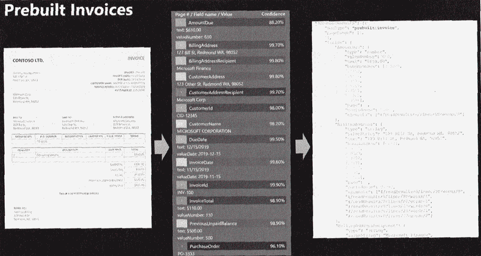
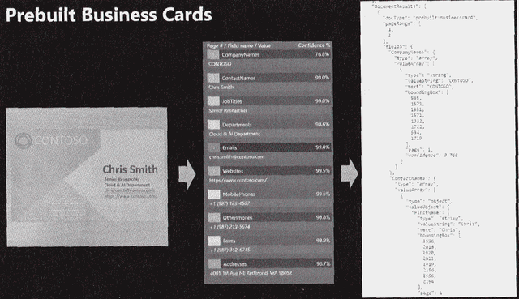
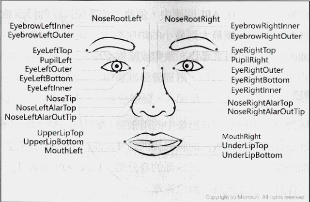
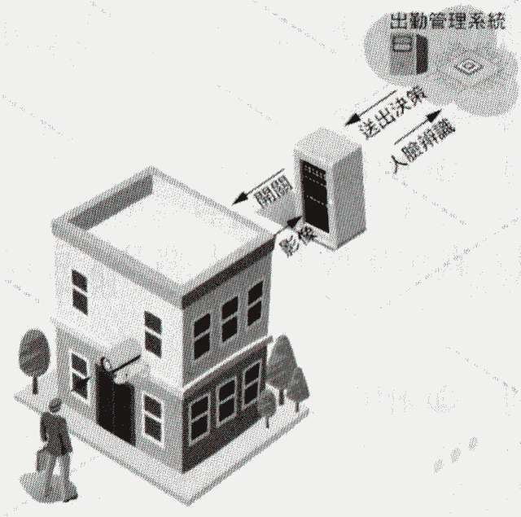
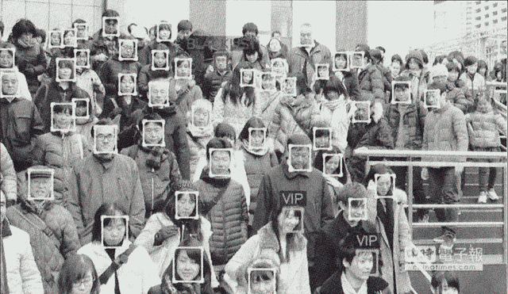
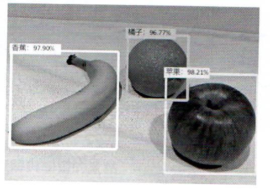

💻 AI-900
電腦視覺工作負載功能
Lecturer: Porshen Lai
Department of Finance
Chihlee University of Technology
2025, Winter
電腦視覺的用途
| 內容組織 | 醫療保健 | ||||||||||
| 文字擷取 | 空間分析 |
||||||||||
| 擴增實境 | 運動 | ||||||||||
| 農業 | 製造業 | ||||||||||
| 智慧城市 | 零售商店的購物者分析 | ||||||||||
| 自動型交通工具 | 臉部識別
1
|
影像分析的功能
| 影像描述 (說明影像) | 光學字元辨識
[1]  |
| 標記視覺特徵
[1]  | 偵測品牌 |
| 影像分類 | 臉部偵測 [1]  |
| 物件偵測 | 偵測特定領域內容 (名人，地標) |
| 語意分割 | 偵測影像類型，偵測影像色彩配置，產生縮圖，內容仲裁等 |
光學文字識別 (OCR)
- 偵測和讀取影像中的文字
- 偵測和讀取 PDF 文件檔中的文字
- 偵測和讀取相片中的手寫文字
文件智慧服務和知識採礦
- 先前稱為 Azure 表格辨識器
- 使用機器學習模型從您的圖檔中擷取索引鍵/值組，文字和資料表
- 文件智慧服務專注於從文件中擷取結構化資料
- 知識採礦則是一個更全面的解決方案
- 結合兩者，可從結構化與非結構化資料中提取有價值的知識和見解
- 例如:[辨識發票],[辨識名片]


自訂視覺
- Custom Vision
- 是一項影像辨識服務 [*]
- 開發人員可以透過自訂視覺服務，針對特定影像內的「物件」指定「標籤」來建置，部署專屬的自訂影像分類及物件偵測模型
- 包括「影像分類」與「物件偵測」兩種功能
- 自訂視覺影像分類
- 產品識別
- 醫療診斷
- 災害調查
- 自訂視覺物件偵測
- 檢查建物安全
- 保護野生動物
- 檢測腫瘤
- 自動化結帳
- 駕駛輔助
- 異常偵測
臉部辨識服務
臉部辨識服務功能大致分成兩大部分：
- 針對單一臉部作偵測，可以得知這些臉部的相關資訊
- 年齡，性別，是否佩戴眼鏡，表情
- 驗證影像中的「這兩張臉屬於同一個人嗎？」
- 人臉的相似度
- 臉部偵測: 臉部矩形, 臉部驗證, 相似性
- 臉部辨識: 臉部特徵點, 屬性, 相似性

臉部識別原理
- 生物辨識技術有指紋辨識，虹膜辨識，聲音辨識，人臉辨識... 等
- 人臉辨識利用人臉五官輪廓的距離角度來建立3D結構模型，以向量方式擷取臉部特徵點偵測值，進行身分辨識
- 優點包括：非接觸式，攝像裝置普及，辨識速度快，不易已照片作假，不受裝扮物件影像，直接取像，不需使用者配合。
- 臉部識別功能：身分識別, 存取授權, 顧客分析, 健康管理
臉部識別應用實例
- 「出勤管理系統」，若保全使用了臉部偵測和臉部辨識電腦視覺，保全系統會分析 CCTV 影像，讓經過授權的人員能夠進入管制區域。

- 人員到達工作場所，入口處攝像機取像，影像資料傳送至後端出勤管理系統
- 伺服器 API 或資料庫的人臉辨識以驗證結果立即傳出是否可開門的決策。
- 「人臉辨識尋人系統」透過無人機從人群中拍攝人臉影像，將資訊傳送至人臉辨識系統，比對資料庫內所指定的人臉影像，可即時列出要找尋的人物。

請問哪一個電腦視覺功能可以為數位相片產生「自動標題」？
描述影像
偵測物件
辨識文字
找出感興趣的區域
描述影像（或稱影像標註/Image Captioning）是產生人類可讀的自然語言描述 (標題) 的功能。
要籌辦一場慈善活動。
需要確保符合下列 A、B 兩點要求的相片:
- A: 包含一或多張臉部。
- B: 包含至少一名戴著墨鏡的人。
您應該使用下列何者來分析影像？
Azure AI 電腦視覺服務中的 [描述影像] 作業
臉部服務中的 [偵測] 作業
Azure AI 電腦視覺服務中的 [分析影像] 作業
臉部服務中的 [驗證] 作業
下列何者可用於讀取輸送帶上的產品標籤？
影像分類
影像處理
物件偵測
光學字元辨識
OCR (光學字元辨識) 專門用於從影像中讀取文字。
下列何者用於在一個影像中識別多種項目？
影像分類
影像描述
物件偵測
光學字元辨識
物件偵測可以識別影像中多個物件的類別和位置。影像分類只能識別影像的主要內容。
您為社交媒體建置影像標記解決方案，以便自動標記朋友的影像。
請將電腦視覺工作負載類型與適當的案例配對。
您應該使用哪一個 Azure AI 服務？
臉部
文件智慧服務
電腦視覺
語言
辨識朋友的身份或特定人物需要使用 臉部辨識 (Face Recognition)，這是 Azure AI 臉部服務的核心功能。
產生影像標題
影像分類
物件偵測
光學字元辨識
擷取電影海報影像中的電影名稱
影像分類
物件偵測
光學字元辨識
找到影像中的車輛
影像分類
物件偵測
光學字元辨識
當您在處理馬拉松賽跑比賽的相片時，為辨識相片中的跑者身份，必須讀取跑者運動衫上的號碼。
您應該使用哪種電腦視覺類型？
影像分類
物件偵測
光學字元辨識
臉部辨識
讀取影像中的文字（號碼）是 OCR 的任務。
下列何項服務的功能可從手寫文件中擷取文字？
臉部辨識
物件偵測
光學字元辨識
影像分類
Azure AI 視覺的 Read API (高階 OCR) 可以準確地從影像和文件中的手寫文字中擷取文字。
下列哪一個範例是根據影片摘要計算某區域的動物數目？
預測
異常偵測
知識採礦
電腦視覺
從影片中識別並計算物件（動物）的數量是電腦視覺的應用。
關於物件偵測
物件偵測可以識別影像中受損產品的位置。
是
否
物件偵測會輸出物件類別和邊界方塊（位置）。
物件偵測可以識別影像中受損產品的多個實例。
是
否
物件偵測的目標是識別影像中所有感興趣的物件。
物件偵測可以識別影像中多種類型的受損產品。
是
否
只要模型經過訓練，它可以識別影像中多個已定義的物件類別。
使用 Azure 視覺可執行下列哪兩項工作？ (多選)
將影像中的文字翻譯為不同語言。
辨識手寫文字。
訓練自訂影像分類模型。
偵測影像中臉部。
「判斷影像中汽車位置，並估計車與車之間的距離。」
應該使用哪種電腦視覺類型？
臉部分析
物件偵測
影像分類
光學字元辨識
判斷物件的位置 (汽車) 是 物件偵測 的核心功能。
要建置一個會識別影像中名人的應用程式，
應該使用哪一項服務？
Azure OpenAI 服務
Azure AI 視覺
交談語言理解
Azure Machine Learning
Azure AI 視覺服務中的影像分析功能可以識別影像中的名人。
「若要識別影像中名人。」
應該使用哪種電腦視覺工作負載類型？
臉部辨識
物件偵測
影像分類
光學字元辨識
您的公司專門製造小工具，您擁有 2000 張小工具的數位相片。
若您需要在這些相片中識別出小工具的位置，則您應該使用下列何者？
Azure AI 電腦視覺空間分析
Azure AI 自訂視覺物件偵測
Azure AI 電腦視覺影像分析
Azure AI 自訂視覺分類
- 任務目標：識別物件的位置 -> 物件偵測。
- 資料來源：您公司提供的特定小工具 -> 需要自訂模型。
- 故選擇 Azure AI 自訂視覺物件偵測。
您可以透過下列何項服務，使用自己的影像來定型物件偵測模型？
Azure AI 電腦視覺
Azure AI 自訂視覺
Azure AI 文件智慧服務
媒體用影片分析器
Azure AI 自訂視覺 (Custom Vision) 專門用於讓用戶上傳自己的資料集來訓練自訂的影像分類或物件偵測模型。
AI 解決方案可協助攝影師取得更佳人像相片，方法是提供下列哪一項臉部功能範例之曝光、雜訊與遮蔽的回饋？
分析
偵測
辨識
臉部分析功能用於提供臉部的屬性，例如情緒、年齡、姿勢，以及如曝光和遮蔽等影像品質相關的反饋。
使用電腦視覺可執行下列哪兩項工作？ (多選)
偵測影像中的色彩配置
將文字翻譯為不同語言
擷取關鍵詞組
預測股票價格
偵測影像中的商標
- 偵測色彩配置是 Azure AI 視覺的影像分析功能之一。
- 偵測商標是 Azure AI 視覺的預建辨識功能。
在下列哪兩種情況可以使用 Azure AI 文件智慧服務？ (多選)
從發票中擷取發票號碼
根據收據辨識零售商
在目錄中尋找產品影像
將表格從法文翻譯成英文
文件智慧服務 (Document Intelligence, 舊稱 Form Recognizer) 專門用於從文件（如發票、收據）中擷取結構化資料。
您正在建置工具來處理零售商店的影像，使能夠識別競爭對手的產品。
其解決方案是必須使用您公司提供的影像來定型。
則您應該使用下列哪一項 Azure 認知服務？
Azure AI 文件智慧服務
Azure AI 電腦視覺
臉部
Azure AI 自訂視覺
需要使用自己的影像來訓練自訂的物件識別模型 -> Azure AI 自訂視覺。
下列哪項服務可用於擷取駕照上的資訊以填入資料庫中？
Azure AI 電腦視覺
交談語言理解
Azure AI 自訂視覺
Azure AI 文件智慧服務
哪一項 Azure 認知服務可用來找出包含敏感資訊的文件？
Azure AI 自訂視覺
Azure AI 文件智慧服務
交談語言理解
電腦視覺功能可部署來？
網站部署文字聊天機器人
別線上商店的異常客戶行為
將臉部辨識功能整合到應用程式
建議對內送電子郵件的自動化回覆
臉部辨識功能是 Azure AI 臉部服務提供的電腦視覺功能。
您需要建置一個會建立影像描述的應用程式。您應該使用哪一項服務？
Azure OpenAI 服務
Azure AI 視覺
交談語言理解
Azure Machine Learning
Azure AI 視覺服務提供 [描述影像] 功能。
您需要建立一個模型，為個人數位相片加上標籤。
您應該使用哪一項 Azure AI 服務？
Azure AI 電腦視覺
Azure AI 自訂視覺
Azure AI 文件智慧服務
Azure AI 語言
Azure AI 視覺服務提供預建的影像標記功能，適用於通用影像（如個人相片）。
Azure AI 自訂視覺模型如果可從共 100 張包含柳橙的影像中，正確識別 70 張包含柳橙的影像。
表示產生 70% 何者的計量？
平均精確率
精確率
召回率
- 召回率 (Recall)：模型正確識別的正樣本數佔所有實際正樣本數的比例。
- 在這個簡化情境中 (100 張都是柳橙)，「正確識別 70 張」 可以被解釋為 召回率 (因為所有 100 張影像都是實際的正樣本，模型找回了 70 個)。
使用 Azure AI 文件智慧服務中預建收據模型可以處理影像大小上限為和？
5MB
10MB
50MB
100MB
使用 Azure AI 電腦視覺服務可以執行哪一項動作？
識別直播影片中的動物品種
建立訓練影片的縮圖
擷取手寫信件中的資料
擷取文件中的關鍵片語
Azure AI 視覺的 Read API (OCR) 可以處理手寫文字的擷取。
你需要實作一套預先建置的解決方案以識別數位相片中的知名品牌。
你應該使用哪一個 Azure 服務 ？
Azure AI 文件智慧服務
Azure AI 電腦視覺
Azure AI 自訂視覺
臉部
交通流量監視系統從監視器影片中收集車牌號碼是 Azure AI 電腦視覺服務中哪個範例？
物件偵測
自然語言
光學字元辨識
影像描述
車牌號碼是影像中的文字，因此需要使用 OCR 來讀取。
哪一項 Azure 服務可以使用 Azure AI 文件智慧服務中的預建收據模型 ？
Azure AI 服務
Azure AI 自訂視覺
Azure Machine Learning
Azure AI 視覺
預建收據模型是 Azure AI Document Intelligence 的一部分，而該服務隸屬於 Azure AI 服務（原稱 Azure Cognitive Services）。
其他選項為何不正確：
- Azure AI 自訂視覺（Custom Vision）：用於影像分類或物件偵測，不處理收據文字抽取。
- Azure Machine Learning：用於建立與管理 ML 模型，不提供預建收據抽取。
- Azure AI 視覺（Computer Vision）：提供 OCR 等功能，但收據模型屬於 Document Intelligence，不屬於 Vision。
在表格辨識器中使用自訂模型有何優點 ？
自訂模型可加以訓練來辨識各種表格類型。
自訂模型一律提供更高的精確度。
只有自訂模型可以部署在內部部署環境。
自訂模型比預建模型便宜。
您將一張影像送至電腦視覺 API，並收到如下圖所示的標註影像。
請問此處使用了哪種類型的電腦視覺？

物件偵測
臉部偵測
光學字元識別
影像分類
影像中多個物件被 邊界方塊 框出並標註類別 (如 Apple)，這是 物件偵測 的典型輸出。
小明有一個在全連超市貨架影像中識別產品座標的應用程式。
請問該應用程式使用了哪項服務？
Azure AI 視覺光學字元辨識
Azure AI 自訂視覺物件偵測
Azure AI 自訂視覺分類
Azure AI 視覺讀取
- 識別座標 -> 物件偵測。
- 產品（通常是特定品牌） -> 需要自訂模型。
- 故選擇 Azure AI 自訂視覺物件偵測。
請問您應該使用哪一個 Azure AI 文件智慧服務預建模型，從法律文件中擷取當事人和司法管轄區？
合約
讀取
版面配置
一般文件
文件智慧服務提供合約的預建模型，專門用於擷取當事人、日期、司法管轄區等法律相關欄位。
藉由監視資訊站的視訊摘要來識別資訊站使用者是否感到困擾，是以下何者的範例？
臉部偵測
臉部分析
臉部辨識
光學字元辨識
識別情緒（如困擾、快樂、悲傷）是臉部分析功能的一部分。